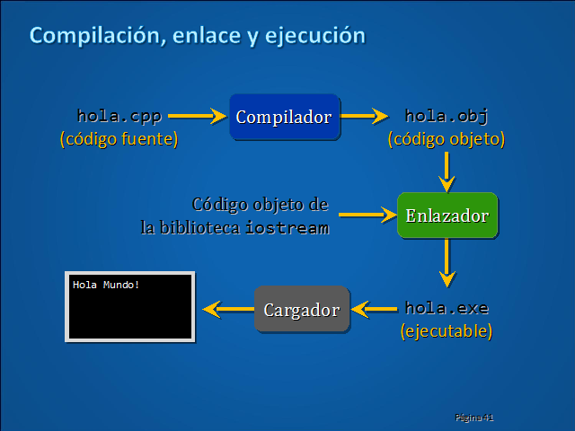
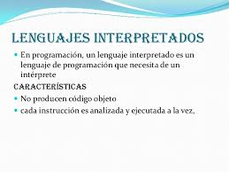
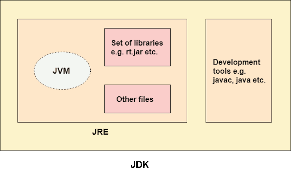
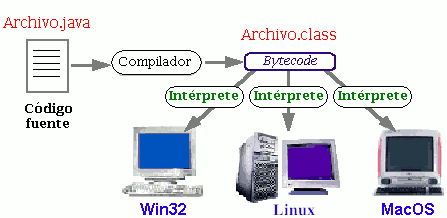
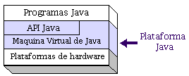

Un programa pot estar escrit en molts llenguatges diferents, però cada màquina, només entén un, el seu codi màquina. Per tant cal traduir el programa font a programa màquina. Segons com es realitze aquesta traducció, els llenguatges es poden classificar de la manera següent:
Java_Introducción
1.4.2. Manera d'obtindre el Codi objecte
llenguatges compilats
Un llenguatge de programació és compilable quan a partir del codi generat pel programador (codi font) es pot obtindre tot el codi màquina que serà executat per l'ordinador.

Llenguatges Interpretats
Un llenguatge de programació és interpretable quan del seu codi font no s'obté tot el corresponent codi objecte (codi màquina) si no que es va interpretant, analitzant i executant cadascuna de les línies del seu codi font segons es necessiten.
No es genera un fitxer executable, sinó que es tradueix a codi màquina cadascuna de les intruccions cada vegada que es necessita.
Com a exemples de llenguatges interpretables tenim: PHP, JavaScript, VBscript... En aquests dos últims el propi navegador web és el que farà la tasca d'interpretació.

Avantatges i inconvenients
| Avantatges | Desavantatges | |
| Lleng. Compilats |
|
|
| Lleng. Interpretats |
. |
|
Per a obtindre els avantatges de tots dos tipus de llenguatges, alguns combinen aquestes dues tasques:
- Primer, el programa original (en Java, els fitxers on es guarda el programa font tenen extensió “java”) es fa una primera traducció però no al llenguatge màquina sinó a un llenguatge intermedi (en Java és bytecode). D'aquesta traducció s'obté un fitxer (a Java tenen extensió “class”). Això equivaldria a la fase de compilació.
- En una segona fase, aquest arxiu és traduït (interpretat) en cada execució.
Això és el que realitza, per exemple, Java. A aquests llenguatges se'n diu llenguatges intermediaris.
Java
Vist que els llenguatges compilats tenen major velocitat d'execució però el codi objecte només pot executar-se en un tipus concret de màquina/SO i els interpretats són més lents, però poden ser executats en qualsevol màquina/SO, si tenen el programa intèrpret instal·lat, podríem dir que Java és un llenguatge intermedi. Això vol dir que les instruccions de qualsevol codi Java primer es compilen a Bytecode, que és un llenguatge que facilita la interpretació per part de la màquina virtual de Java (Java Virtual Machine) JVM, així brinda millor velocitat i pot executar-se en qualsevol sistema operatiu on estiga instal·lada la JVM. (La JVM està dins de la JRE).



El Kit de Desenvolupament de Java (JDK) conté les eines i llibreries necessàries per a crear i executar miniaplicacions i aplicacions a Java. A continuació es llistes algunes de les utilitats que es poden trobar en el JDK:
- javac. És el compilador de Java. S'encarrega de convertir el codi font escrit a Java a bytecode.
- java. És l'intèrpret de Java. Executa el bytecode a partir dels arxius class.
- appletviewer. És un visor d'applets. En la majoria de les ocasions pot utilitzar-se en lloc d'un Navegador Web.
- javadoc. S'utilitza per a crear documentació en format HTML a partir del codi font Java i els comentaris que conté.
- javap. És un desensamblador de Java.
- jar. És una eina utilitzada per a treballar amb els arxius JAR.
Llicenciat sota la Llicència Creative Commons Reconeixement CompartirIgual 4.0